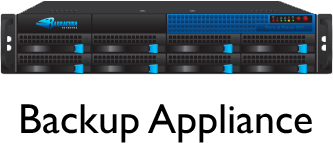

By Andy Blyler (@ablyler) and Jon Kuperman (@insitedesignlab)
Lead Software Engineer @ Barracuda Networks
working on the Backup product since 2006.
Software Engineer @ Barracuda Networks
web developer and new employee at Barracuda Backup
What is a Daemon / Forking
Why PHP Daemons
Using our library
Real World Results
/ˈdēmən/
Noun
/fɔrkɪn/
Verb
 |
|
|---|---|
|
|
Actively maintained for 5+ years.
Open source just days ago!
/* setup forking daemon */
$server = new fork_daemon();
$server->max_work_per_child_set(3);
$server->register_child_run("process_child_run");
/* add work units */
$data_set = array(1, 2, 3, 4, 5, 6, 7, 8, 9, 10);
$server->addwork($data_set);
/* process work blocking mode */
$server->process_work(true);
/* registered call back function */
function process_child_run($data_set)
{
echo "I'm child working on: " . implode(",", $data_set) . PHP_EOL;
}define("BUCKET1", 1);
define("BUCKET2", 2);
$server->add_bucket(BUCKET1);
$server->add_bucket(BUCKET2);
$server->max_children_set(2, BUCKET1);
$server->max_children_set(5, BUCKET2);
$server->register_child_run("process_child_run_1", BUCKET1);
$server->register_child_run("process_child_run_2", BUCKET2);
$data_set = array();
for($i=0; $i<100; $i++) $data_set[] = $i;
$server->addwork($data_set, "", BUCKET1);
$server->addwork($data_set, "", BUCKET2);
/* setup forking daemon */
$server = new fork_daemon();
$server->register_parent_prefork(array('prefork'));
...
function prefork()
{
echo "I'm closing resources..." . PHP_EOL;
}$log = new Logger('forker');
/* setup forking daemon */
$s = new fork_daemon();
$s->register_logging(array($log, 'addCritical'), fork_daemon::LOG_LEVEL_CRIT);
$s->register_logging(array($log, 'addWarning'), fork_daemon::LOG_LEVEL_WARN);
$s->register_logging(array($log, 'addInfo'), fork_daemon::LOG_LEVEL_INFO);
$s->register_logging(array($log, 'addDebug'), fork_daemon::LOG_LEVEL_DEBUG);/* setup forking daemon */
$server = new fork_daemon();
$server->helper_process_spawn('helper');
...
function helper()
{
echo "starting helper" . PHP_EOL;
for ($i = 0; $i < 3; $i++)
{
echo "helper: " . $i . PHP_EOL;
sleep(1);
}
exit();
}A backup is started every two seconds
Cloud processes a petabyte every 1.5 days